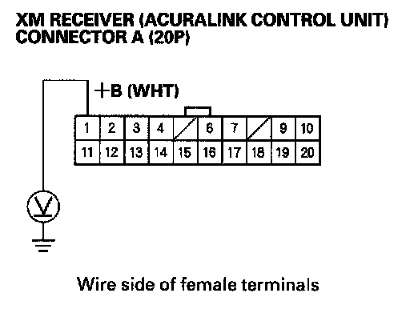
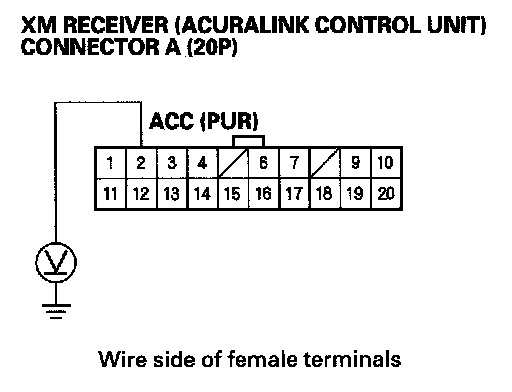
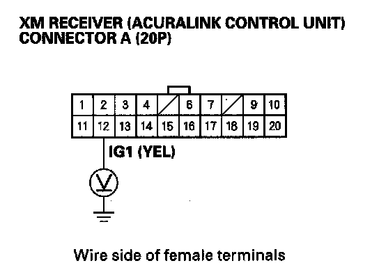
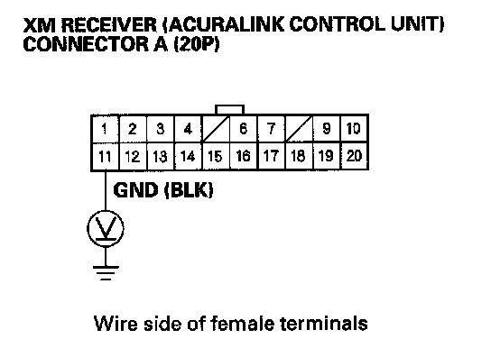
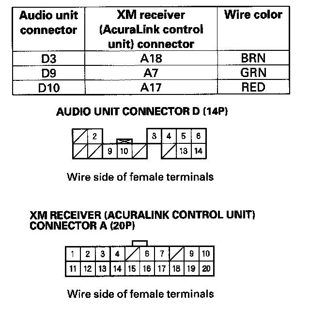
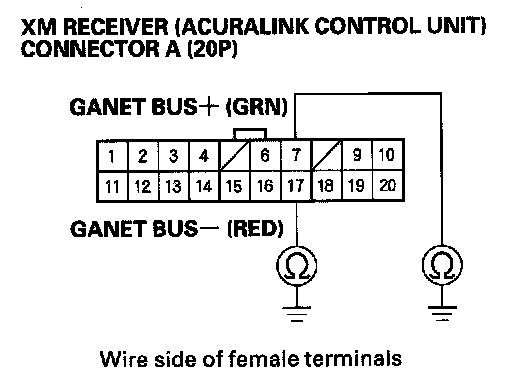
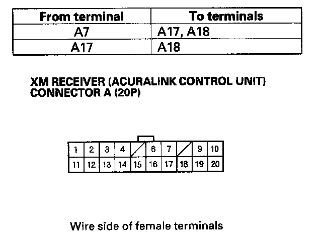

XM Radio Display Is Blank and No Station Information Is Displayed (With AcuraLink)
XM radio display is blank and no station information is displayed (with AcuraLink)NOTE:
- Always check the connectors for poor connections or loose terminals.
- If you replace the XM receiver, the Acuralink must be reactivated by Acura Client Services.
1. Turn the ignition switch to LOCK (0).
2. Disconnect the XM receiver (AcuraLink control unit) connector A (20P).

3. Measure the voltage between XM receiver (AcuraLink control unit) connector A (20P) No. 1 terminal and body ground.
Is there battery voltage?
YES - Go to step 4.
NO - Repair open in the between No. 5 (10 A) fuse in the under-dash fuse/relay box and XM receiver (AcuraLink control unit) connector A (20P) No. 1 terminal.
4. Turn the ignition switch ON (II).

5. Measure the voltage between XM receiver (AcuraLink control unit) connector A (20P) No. 2 terminal and body ground.
Is there battery voltage?
YES - Go to step 6.
NO - Repair open in the wire between No. 32 (10 A) fuse in the under-dash fuse/relay box and XM receiver (AcuraLink control unit) connector A (20P) No. 2 terminal.

6. Measure the voltage between XM receiver (AcuraLink control unit) connector A (20P) No. 12 terminal and body ground.
Is there battery voltage?
YES - Go to step 7.
NO - Repair open in the wire between No. 21 (10 A) fuse in the under-dash fuse/relay box and XM receiver (AcuraLink control unit) connector A (20P) No. 12 terminal.
7. Reconnect the XM receiver (AcuraLink control unit) connector A (20P).

8. Measure the voltage between XM receiver (AcuraLink control unit) connector A (20P) No. 11 terminal and body ground.
Is there less than 0.1 V?
YES - Go to step 9.
NO - Repair open in the wire between XM receiver (AcuraLink control unit) connector A (20P) No. 11 terminal and body ground (G606).
9. Disconnect audio unit connector D (14P), XM receiver (AcuraLink control unit) connector A (20P), navigation unit connector A (20P), and navigation display unit 20P connector.

10. Check for continuity between the following terminals of the audio unit connector D (14P) and XM receiver (AcuraLink control unit) connector A (20P).
Is there continuity?
YES - Go to step 11.
NO - Repair open in the wire(s) between audio unit and XM receiver (AcuraLink control unit).

11. Check for continuity between body ground and XM receiver (AcuraLink control unit) connector A (20P) terminals No. 7 and 17 individually.
Is there continuity?
YES - Repair short to body ground in the wire(s) between the audio unit and XM receiver (AcuraLink control unit) or between the shield wires (replace the applicable shield harness).
NO - Go to step 12.

12. Check for continuity between the terminal of XM receiver (AcuraLink control unit) connector A (20P) according to the cable.
Is there continuity between any of the terminals?
YES - Repair short in the wire(s) between the audio unit and XM receiver (AcuraLink control unit) (replace the appropriate shield harness).
NO - Substitute a known-good audio unit and recheck. If the symptom/indicated goes away, replace the original audio unit If the symptom is still present, substitute a known-good XM receiver (AcuraLink control unit) and recheck. If the symptom indicated goes away, replace the original XM receiver (AcuraLink control unit).